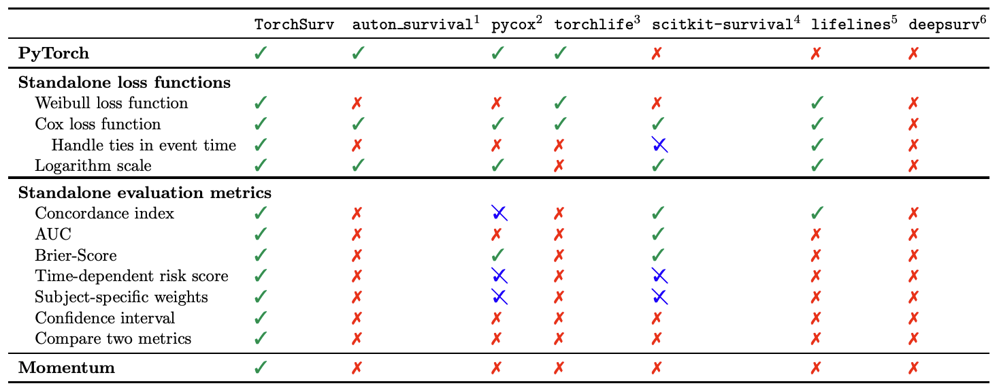
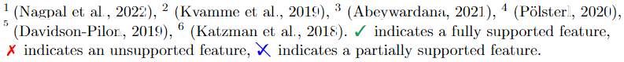
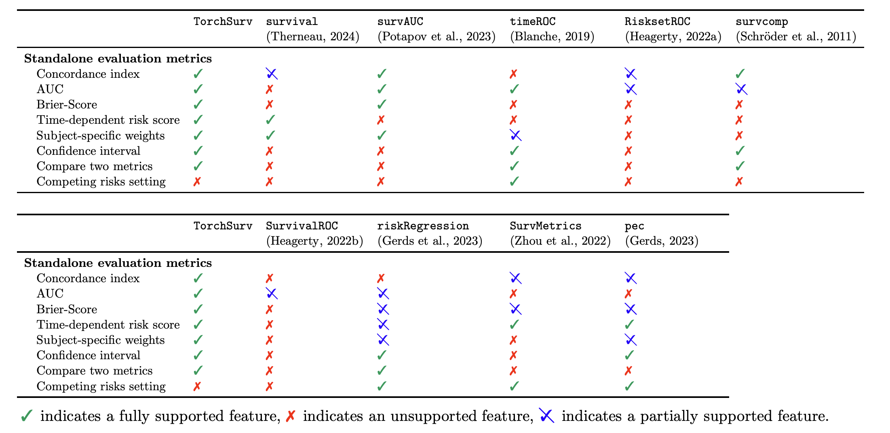

Deep survival analysis made easy


TorchSurv is a Python package that serves as a companion tool to perform deep survival modeling within the PyTorch environment. Unlike existing libraries that impose specific parametric forms on users, TorchSurv enables the use of custom PyTorch-based deep survival models. With its lightweight design, minimal input requirements, full PyTorch backend, and freedom from restrictive survival model parameterizations, TorchSurv facilitates efficient survival model implementation, particularly beneficial for high-dimensional input data scenarios.
If you find this repository useful, please give us a star! 🌟 ⭐ 🌟
TL;DR#
Our idea is to keep things simple. You are free to use any model architecture you want! Our code has 100% PyTorch backend and behaves like any other functions (losses or metrics) you may be familiar with.
Our functions are designed to support you, not to make you jump through hoops. Here’s a pseudo code illustrating how easy is it to use TorchSurv to fit and evaluate a Cox proportional hazards model:
from torchsurv.loss import cox
from torchsurv.metrics.cindex import ConcordanceIndex
# Pseudo training loop
for data in dataloader:
x, event, time = data
estimate = model(x) # shape = torch.Size([64, 1]), if batch size is 64
loss = cox.neg_partial_log_likelihood(estimate, event, time)
loss.backward() # native torch backend
# You can check model performance using our evaluation metrics, e.g, the concordance index with
cindex = ConcordanceIndex()
cindex(estimate, event, time)
# You can obtain the confidence interval of the c-index
cindex.confidence_interval()
# You can test whether the observed c-index is greater than 0.5 (random estimator)
cindex.p_value(method="noether", alternative="two_sided")
# You can even compare the metrics between two models (e.g., vs. model B)
cindex.compare(cindexB)
A collaborative project#
This package was developed by Novartis and the US Food and Drug Administration (FDA) as part of a research collaboration agreement on radiogenomics.
TorchSurv is now part of the FDA’s Regulatory Science Tool Catalog 🎉.
Disclaimer Regarding the Catalog of Regulatory Science Tools
The enclosed tool is part of the [Catalog of Regulatory Science Tools](https://cdrh-rst.fda.gov/), which provides a peer-reviewed resource for stakeholders to use where standards and qualified Medical Device Development Tools (MDDTs) do not yet exist. These tools do not replace FDA-recognized standards or MDDTs. This catalog collates a variety of regulatory science tools that the FDA's Center for Devices and Radiological Health's (CDRH) Office of Science and Engineering Labs (OSEL) developed. These tools use the most innovative science to support medical device development and patient access to safe and effective medical devices. If you are considering using a tool from this catalog in your marketing submissions, note that these tools have not been qualified as Medical Device Development Tools and the FDA has not evaluated the suitability of these tools within any specific context of use. You may request feedback or meetings for medical device submissions as part of the Q-Submission Program. For more information about the Catalog of Regulatory Science Tools, email RST_CDRH@fda.hhs.gov.
Tool Reference
RST Reference Number: RST24AI17.01
Date of Publication: 10/16/2025
Recommended Citation: TorchSurv: Deep Learning Tools for Survival Analysis (RST24AI17.01). U.S. Food and Drug Administration (2025).
Installation and dependencies#
First, install the package using either PyPI or Conda
Using conda
conda install conda-forge::torchsurv
Using PyPI
pip install torchsurv
Other installation details
- Using for local installation (latest version for example)
git clone <repo>
cd <repo>
pip install -e .
Additionally, to build the documentation (notebooks, sphinx) and for package development (tests), please see the development notes and
dev/environment.yml. This step is not required to use TorchSurv in your projects but only for optional features.
Getting started#
We recommend starting with the introductory guide, where you’ll find an overview of the package’s functionalities.
Create survival data#
We simulate a random batch of 64 subjects. Each subject is associated with a binary event status (= True if event occurred), a time-to-event or censoring and 16 covariates.
>>> import torch
>>> _ = torch.manual_seed(52)
>>> n = 64
>>> x = torch.randn((n, 16))
>>> event = torch.randint(low=0, high=2, size=(n,), dtype=torch.bool)
>>> time = torch.randint(low=1, high=100, size=(n,), dtype=torch.float)
Cox proportional hazards model#
The user is expected to have defined a model that outputs the estimated log relative hazard for each subject. For illustrative purposes, we define a simple linear model that generates a linear combination of the covariates.
>>> from torch import nn
>>> model_cox = nn.Sequential(nn.Linear(16, 1))
>>> log_hz = model_cox(x)
>>> print(log_hz.shape)
torch.Size([64, 1])
Given the estimated log relative hazard and the survival data, we calculate the current loss for the batch with:
>>> from torchsurv.loss.cox import neg_partial_log_likelihood
>>> loss = neg_partial_log_likelihood(log_hz, event, time)
>>> print(loss)
tensor(4.1723, grad_fn=<DivBackward0>)
We obtain the concordance index for this batch with:
>>> from torchsurv.metrics.cindex import ConcordanceIndex
>>> with torch.no_grad(): log_hz = model_cox(x)
>>> cindex = ConcordanceIndex()
>>> print(cindex(log_hz, event, time))
tensor(0.4872)
We obtain the Area Under the Receiver Operating Characteristic Curve (AUC) at a new time t = 50 for this batch with:
>>> from torchsurv.metrics.auc import Auc
>>> new_time = torch.tensor(50.)
>>> auc = Auc()
>>> print(auc(log_hz, event, time, new_time=50))
tensor([0.4737])
Weibull accelerated failure time (AFT) model#
The user is expected to have defined a model that outputs for each subject the estimated log scale and optionally the log shape of the Weibull distribution that the event density follows. In case the model has a single output, TorchSurv assume that the shape is equal to 1, resulting in the event density to be an exponential distribution solely parametrized by the scale.
For illustrative purposes, we define a simple linear model that estimate two linear combinations of the covariates (log scale and log shape parameters).
>>> from torch import nn
>>> model_weibull = nn.Sequential(nn.Linear(16, 2))
>>> log_params = model_weibull(x)
>>> print(log_params.shape)
torch.Size([64, 2])
Given the estimated log scale and log shape and the survival data, we calculate the current loss for the batch with:
>>> from torchsurv.loss.weibull import neg_log_likelihood_weibull
>>> loss = neg_log_likelihood_weibull(log_params, event, time)
>>> print(loss)
tensor(82931.5078, grad_fn=<DivBackward0>)
To evaluate the predictive performance of the model, we calculate subject-specific log hazard and survival function evaluated at all times with:
>>> from torchsurv.loss.weibull import log_hazard
>>> from torchsurv.loss.weibull import survival_function_weibull
>>> with torch.no_grad(): log_params = model_weibull(x)
>>> log_hz = log_hazard(log_params, time)
>>> print(log_hz.shape)
torch.Size([64, 64])
>>> surv = survival_function_weibull(log_params, time)
>>> print(surv.shape)
torch.Size([64, 64])
We obtain the concordance index for this batch with:
>>> from torchsurv.metrics.cindex import ConcordanceIndex
>>> cindex = ConcordanceIndex()
>>> print(cindex(log_hz, event, time))
tensor(0.4062)
We obtain the AUC at a new time t = 50 for this batch with:
>>> from torchsurv.metrics.auc import Auc
>>> new_time = torch.tensor(50.)
>>> log_hz_t = log_hazard(log_params, time=new_time)
>>> auc = Auc()
>>> print(auc(log_hz_t, event, time, new_time=new_time))
tensor([0.3509])
We obtain the integrated brier-score with:
>>> from torchsurv.metrics.brier_score import BrierScore
>>> brier_score = BrierScore()
>>> bs = brier_score(surv, event, time)
>>> print(brier_score.integral())
tensor(0.4447)
Related packages
The table below compares the functionalities of TorchSurv with those of
auton-survival,
pycox,
torchlife,
scikit-survival,
lifelines, and
deepsurv.
While several libraries offer survival modelling functionalities, no existing library provides the flexibility to use a custom PyTorch-based neural networks to define the survival model parameters.
The outputs of both the log-likelihood functions and the evaluation metrics functions have undergone thorough comparison with benchmarks generated using Python and R packages. The comparisons (at time of publication) are summarised in the Related packages summary.
 
Survival analysis libraries in R. For obtaining the evaluation metrics, packages survival, riskRegression, SurvMetrics and pec require the fitted model object as input (a specific object format) and RisksetROC imposes a smoothing method. Packages timeROC, riskRegression and pec force the user to choose a form for subject-specific
weights (e.g., inverse probability of censoring weighting (IPCW)). Packages survcomp and SurvivalROC do not implement the general AUC but the censoring-adjusted AUC estimator proposed by Heagerty et al. (2000).

Citation#
If you use this project in academic work or publications, we appreciate citing it using the following BibTeX entry:
@article{Monod2024,
doi = {10.21105/joss.07341},
url = {https://doi.org/10.21105/joss.07341},
year = {2024},
publisher = {The Open Journal},
volume = {9},
number = {104},
pages = {7341},
author = {Mélodie Monod and Peter Krusche and Qian Cao and Berkman Sahiner and Nicholas Petrick and David Ohlssen and Thibaud Coroller},
title = {TorchSurv: A Lightweight Package for Deep Survival Analysis}, journal = {Journal of Open Source Software}
}